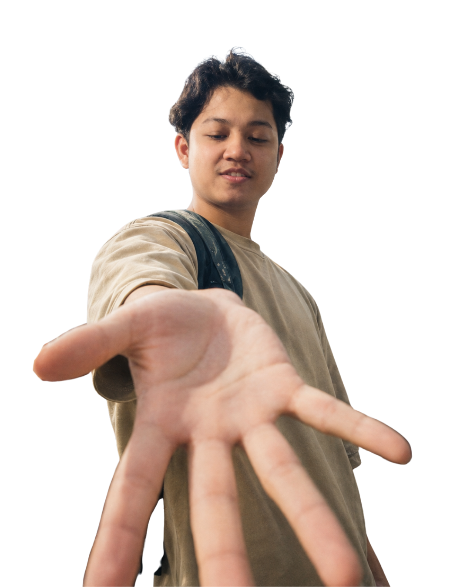

Focused websites
Landing pages, sales pages, portfolios and lightweight business websites for people who need clarity before complexity.
I'm Syed Muhammad Haziq, a Malaysian web developer and product builder. I build focused websites for businesses, and I also build KadMeHQ, so I think about a site beyond how it looks: what it helps people understand, trust and do.

I care about websites that are easy to understand, easy to trust and easy to act on. That means structure before decoration: clear offers, readable sections, fast pages, working contact paths and enough visual character to feel owned.
KadMeHQ pushes me to think like a founder, not only a developer. Every small decision has a product question behind it: what should the user see first, what can be simplified, what can be shipped now, and what can improve over time.
At Oxford EduVision, I work on production web platforms and educational apps. That mix keeps my freelance work grounded: simple pages should still be reliable, maintainable and useful to real people.
Landing pages, sales pages, portfolios and lightweight business websites for people who need clarity before complexity.
A Laravel-based website and digital profile product for Malaysian SMEs, built and improved in public as the product matures.
Web platforms and educational apps, including Islamic learning platforms and Unity-based learning games.
A visitor should know what the site offers, who it is for and what to do next without hunting.
The page should look intentional, but the visual work must support the business goal.
A useful launched version beats a perfect idea that never meets real users.
I keep freelance work focused so the result is manageable, maintainable and delivered with care.
Send the basics by email and I will look at the offer, structure and best next step.